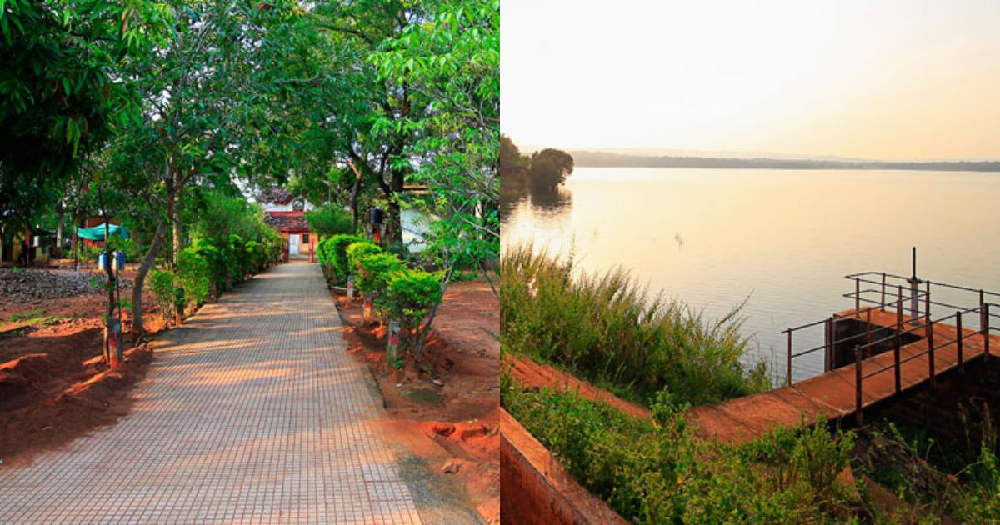

Ghodajhari Lake
Ghodajhari Lake
This lake is situated in Nagbhir tehsil. It is 6 kms away from the main Nagpur – Chandrapur highway, 106 kms from Chandrapur town and 97 kms from Nagpur. The capacity of the reservoir is 45 cusecs of water.
About

Official Designation of Ghorazari Dam Irrigation Project is " Ghorazari Dam , D - 01006 " . However local and popular name is " Ghorazari Lake / Ghorazari Talav ". Ghorazari Dam was constructed as parts of Irrigation Projects by the Britishers during the British Raj in the Year 1923 . It is built on and impounds Gorazari River . Nearest city to dam is Nagbhir in Chandrapur District of Maharashtra . The dam is an Earth fill Dam .
Now a days almost all the water bodies make for good picnic spots. Ghorazari Lake is also a popular Tourist attraction for its scenic beauty .Hilly terrain and forest adds to the natural beauty. Nearby cities: Chimur, Mul, Chandrapur